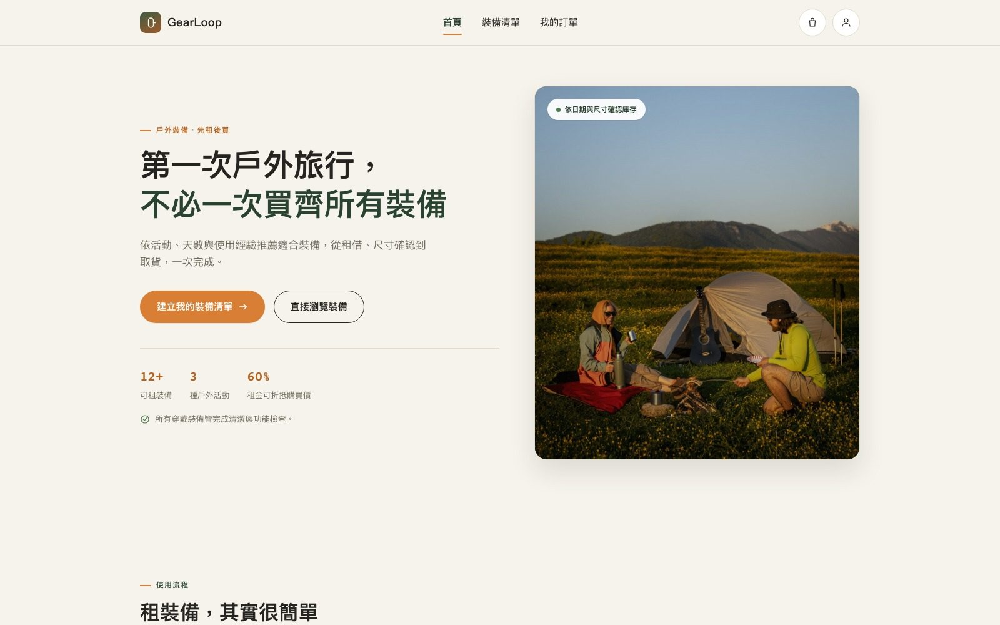
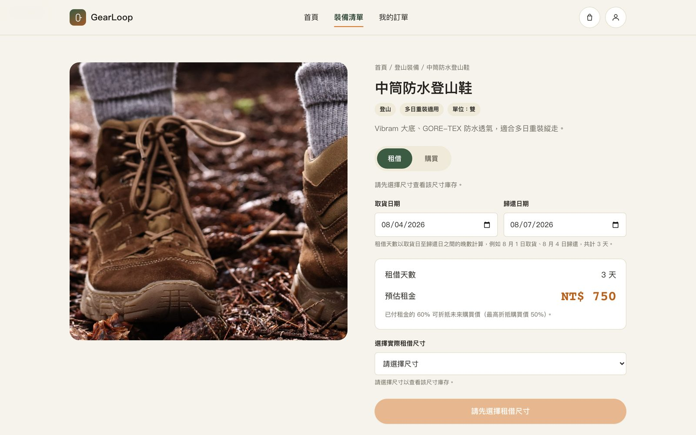
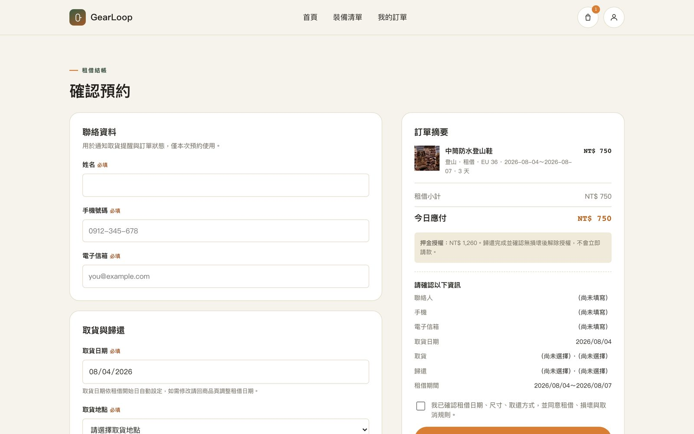
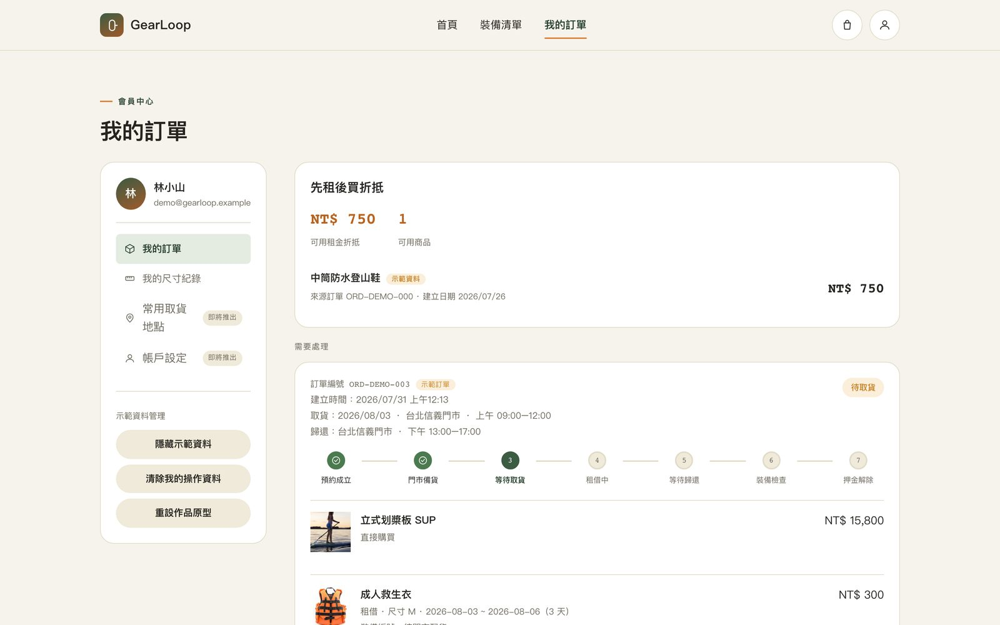

GearLoop
戶外裝備「先租後買」電商平台，讓使用者在買齊裝備前先租用實際商品試用，已付租金可折抵未來購買價，並提供尺寸／難度比對工具、租借與購買雙模式切換，協助新手安心踏出第一次戶外旅行。
先租，再決定要不要買。

- Role
- UI/UX 設計＋前端開發（個人專案）
- Timeline
- 2026
- Problem
- 戶外新手不知道該租哪些裝備或尺寸，一般電商介面也看不出租借特有的日期與庫存狀態。
- Method
- 沒有真實使用者可訪談，從一份文字規格出發，動工前用結構化問答鎖定視覺方向與範圍，之後依規格持續迭代。
- Key Deliverables
- 完整前端實作的租購電商平台：尺寸／難度比對工具、租買模式切換、租轉買額度系統、端對端購物流程。
- Validation
- 端對端 Playwright 自動化測試（9 種情境），非真人使用者測試。
- Limitation
- 沒有真實使用者測試；規格明確禁止新增功能與即時庫存同步，商品與庫存資料皆為示範用途。
專案總覽
GearLoop 是一個從零開始的戶外裝備電商概念專案，也是目前唯一一個沒有 Figma 稿作為起點的案例——直接從一份文字規格（使用者痛點、核心功能、作品集角度）出發，由我一人完成資訊架構、視覺設計與前端實作。核心訴求是「先租後買」：讓使用者在真正買下登山鞋、帳篷等裝備前，先用租借的方式實際試用，已付租金還能折抵未來的購買價。
問題
戶外新手往往不確定自己該租哪些裝備、尺寸或難度是否合適；一般電商網站的介面設計是為了「買斷」而生，看不出租借特有的可租日期、庫存與租/買雙模式資訊；裝備一次買齊的門檻也高，卻沒有一個介於「用朋友的」跟「直接買」之間的低成本試用選項。
新手不知道該租什麼
尺寸、難度與裝備適用天數若沒有明確引導，新手容易租錯或買錯不適合的裝備。
租借特有資訊被忽略
一般電商介面看不出可租日期、當下庫存與租/買狀態，這些正是租賃服務最關鍵的資訊。
買斷是唯一選項
裝備一次買齊成本高，卻沒有比「直接買」門檻更低的方式可以先試用再決定。
研究
這是一個獨立概念專案，沒有真實使用者可以訪談，起點也不是 Figma 稿，而是一份寫清楚使用者痛點與核心功能的文字規格。開始動工前，先用結構化的問答鎖定兩個關鍵決策（視覺方向、要做完整可互動原型還是先做線框），避免猜錯方向造成白工，之後再依這份規格持續迭代。
設計策略
依上述問題整理出三個設計原則，作為商品頁、租購邏輯與驗證方式的依據。
用工具取代文案
「不知道該租什麼」用尺寸與難度比對邏輯直接判斷，而不是堆更多說明文字。
租與買共用同一個介面
同一個商品頁承載租借與購買兩種決策路徑，而不是做成兩套獨立頁面。
用真實可運作的流程驗證設計
購物車、結帳、訂單與租轉買額度要真的能跑通，而不只是靜態畫面。
關鍵決策
| 尺寸／難度比對工具 | 依裝備類型分別比對鞋號、身高、體重或容量等條件，若使用者的經驗等級與裝備難度不符會即時顯示提醒，用工具取代大量說明文字。 |
|---|---|
| 租／買模式切換 | 同一個商品頁用 Tab 切換租借與購買模式，價格與說明即時重新計算，不需要另外做兩套頁面。 |
| 租轉買額度系統 | 已付租金的 60% 可折抵未來購買價，最高折抵買斷價的 50%，在商品頁與會員中心都即時顯示目前可折抵金額。 |
| 端對端的購物流程 | 購物車、結帳、訂單狀態與歸還驗收整段流程都用真實的本機儲存打通，訂單狀態會依日期自動推進，而不是固定不變的靜態原型。 |
關鍵畫面
從商品頁的租／買切換與尺寸比對工具，到結帳頁的訂單摘要與押金說明，再到會員中心的租轉買額度與訂單狀態時間軸，呈現完整的租購決策流程。



驗證
獨立概念專案，沒有真實使用者測試資源，驗證聚焦在端對端的自動化測試：用 Playwright 涵蓋商品瀏覽、加入購物車、日期衝突處理、租／買模式切換、結帳驗證、額度兌換、訂單建立、會員中心渲染與歸還驗收共 9 種情境，確保整段租購流程真的能跑通，而不只是畫面好看。
反思
這是第一個沒有 Figma 稿可以參考的案例，讓我練習直接從一份文字規格出發，同時兼顧資訊架構、視覺設計與前端邏輯。在明確禁止新增功能與即時庫存同步的規格限制下，仍然要解決「新手不知道該租什麼」這個核心問題，也讓我更清楚：好用的租購體驗，關鍵常常在工具與邏輯，而不是更多說明文字。